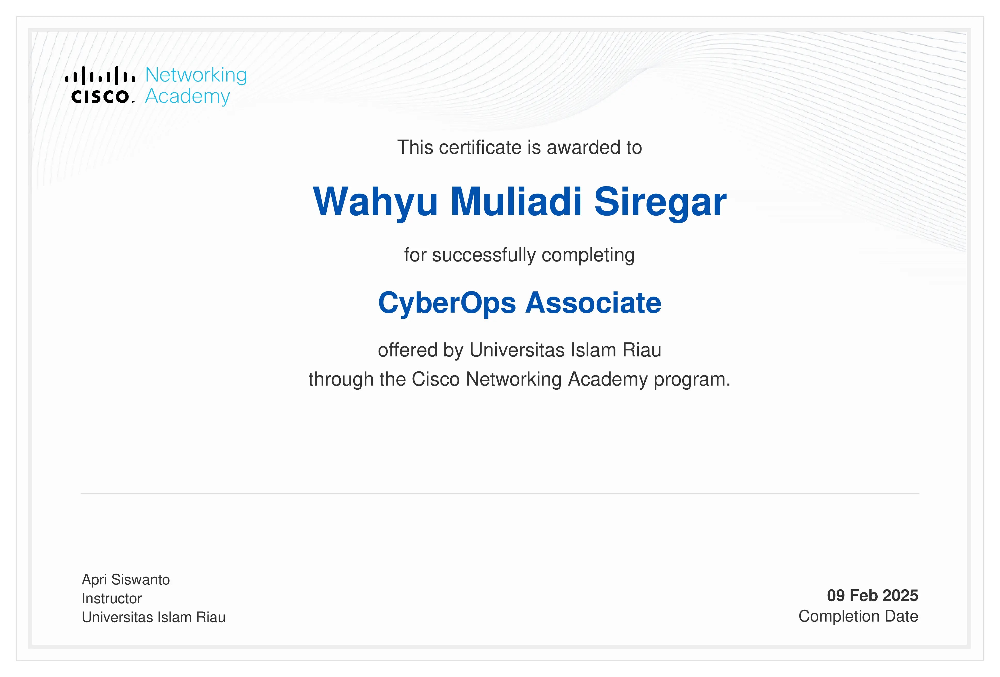
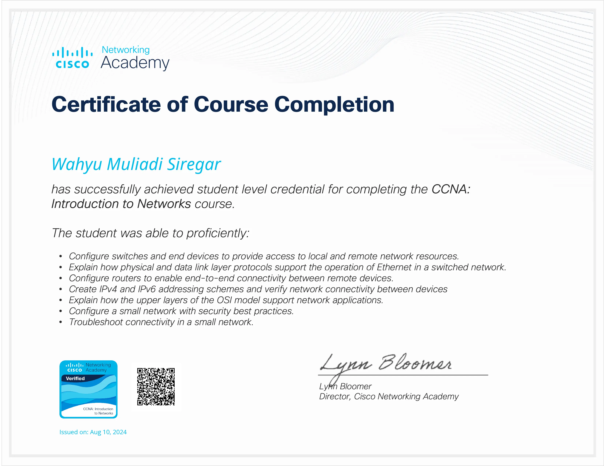

01
Cybersecurity Assessment
Penetration testing, SQL injection analysis, XSS testing, and OSINT-based risk review for small projects and academic labs.

Building practical security solutions with clear communication.
SMARTDISCOVER — MULTI-AGENT AI MUSIC
I'm an 8th semester Computer Science student at Universitas Islam Riau. My work sits at the intersection of cybersecurity, digital forensics, and AI-driven analysis — with a clear preference for shipping something usable over shipping something clever.
I enjoy breaking things down into the smallest practical problem, prototyping fast, and writing reports that non-engineers can actually read. Most recent obsession: multi-agent systems for real-world tasks and secure telemetry for embedded devices.
When I'm not shipping, I'm usually reading about OSINT case studies, tinkering with ESP32 boards, or helping classmates untangle SQL queries.
01
Penetration testing, SQL injection analysis, XSS testing, and OSINT-based risk review for small projects and academic labs.
02
Evidence collection, artifact inspection, and structured incident analysis workflows with clear, reproducible reports.
03
Machine learning prototypes using TensorFlow, Keras, and IndoBERT to extract practical security insights from noisy data.
04
ESP32-based monitoring prototypes and secure telemetry pipeline experimentation for lightweight embedded environments.
 ★
FEATURED PROJECT
★
FEATURED PROJECT
Multi-agent AI music discovery assistant that turns natural-language mood prompts into ranked Spotify recommendations and one-click playlist creation. Built with a 4-agent pipeline: Profiler → Spotify Search → Filter & Ranker → Presenter.
End-to-end security research workflow combining data analysis, threat modeling, and automated reporting for campus-scale case studies.
Cultural preservation system with searchable family lineage data, clean information flow, and simple admin tooling.
Indonesian text sentiment pipeline for classification experiments and practical analysis on social-media-scale datasets.
Realtime sensor data prototypes for telemetry and security-oriented embedded workflows, with minimal memory footprint.
Started Computer Science at UIR. First exposure to networking fundamentals and Linux environments.
Dove into pentesting labs, web vulnerabilities (SQLi, XSS), and the Cisco NetAcad track. First real forensics walkthroughs.
Built an Indonesian NLP pipeline with IndoBERT + Keras for classification experiments — first serious ML shipping experience.
Completed Cisco CyberOps Associate course + Introduction to Networks. SOC-oriented mindset locked in.
Shipped SmartDiscover — a 4-agent LLM pipeline turning mood prompts into Spotify playlists. Current featured project.


4+
Active research projects in cybersecurity domains.
60+
Security and analysis lab sessions completed.
10+
Learning milestones across cybersecurity domains.
Open to collaboration on cybersecurity research, digital forensics projects, and AI-enhanced security workflows. Drop a message and let's talk about your next idea — whether it's a side project, a thesis, or something bigger.